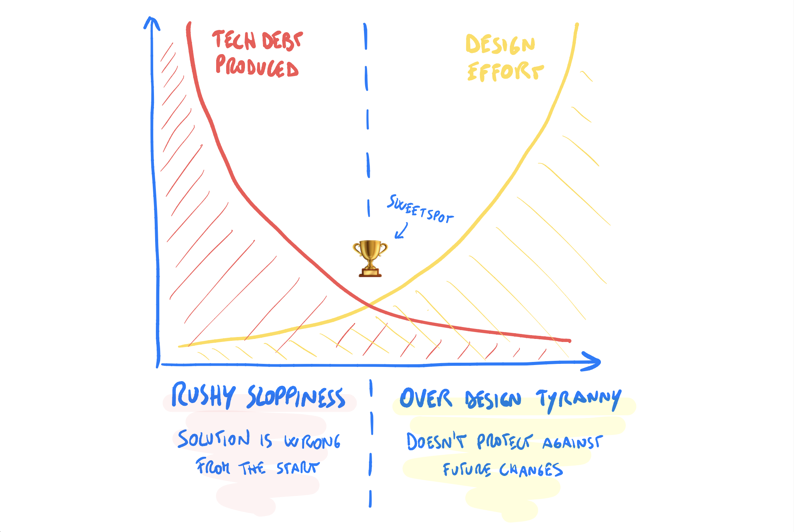
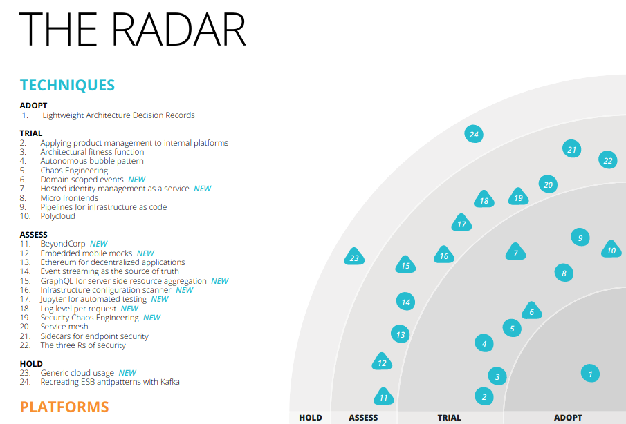

Architecture Decision Records
jan.zmeskal@phonexia.com
Technical Debt

Not all debt is bad
Technical debt is bad when it's
- Unconscious
- Unmanaged
Software Engineering Radio Episode 481: Managing Technical Debt
Boring Theory
Architecturally-significant Requirement -> Architecture Decision -> Architecture Decision Record
Architecturally-significant Requirement -> Architecture Decision -> Architecture Decision Record
Architecturally-significant Requirement -> Architecture Decision -> Architecture Decision Record
ADR repository on GitHub
Boring Theory
Architecture Decision Log
Architecturally-significant Requirement -> Architecture Decision -> Architecture Decision Record
Architecturally-significant Requirement -> Architecture Decision -> Architecture Decision Record
Architecturally-significant Requirement -> Architecture Decision -> Architecture Decision Record
ADR repository on GitHub
Why?
Not all decisions are made at the start of an agile project
We don't document motivation behind decisions we make
When looking at a past decision, we have two options ✌️
Blindly accept it 🙈 Blindly change it
Blind acceptance 👍
May be OK if the decision is still valid
Developers' fear to change anything
Software collapsing under its own weight
Blind change 💣
May be OK if the context has changed
Risk of damaging project's value
Potential of wasted time
Tried and tested practice
ThoughtWorks on Lightweight ADRs
How?
Agile is not opposed to documentation, only to valueless documentation
Documents that assist the team can have value if kept up to date
Large documents are neither read, nor kept updated
Small, modular documents are easy to read and update
Getting started
$ mkdir doc/decisions
$ touch doc/decisions/001_choose_db_backend.md
ADR templates
- Freeform 🚴
- Light-weight structure 🏍️
- Formal with complex structure ✈️
Template examples on GitHub
Michael Nygard's template